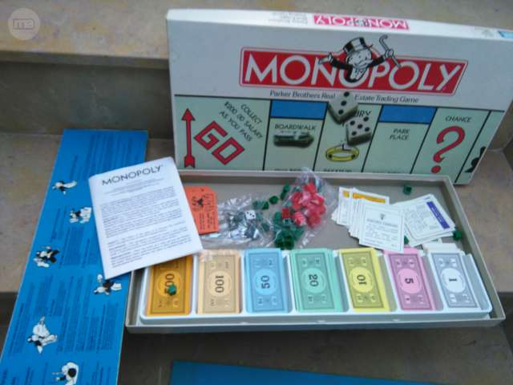

Antes
Unjuego creado con la función de servir como herramienta para enseñar las teorías acerca de la justicia social y económica extraídas del estudio titulado Progreso y Miseria de Henry George.
Monopoly
Comercializado por vez primera en el año de 1936.
A lo largo de 80 años, el juego ha sufrido una notable evolución. Sus multiples ediciones y sus tantas versiones han dado pie a que se cambiada desde la caja que lo contiene hasta los elementos que lo componen. Logrando asi, mantenerse como el favorito a través de las décadas.
Ahora
Con los años la finalidad del juego cambio para solo disfrutar un buen rato, negociando propiedades y hasta siendo uso de medios electrónicos para todas las trasacciones que requiere el juego.